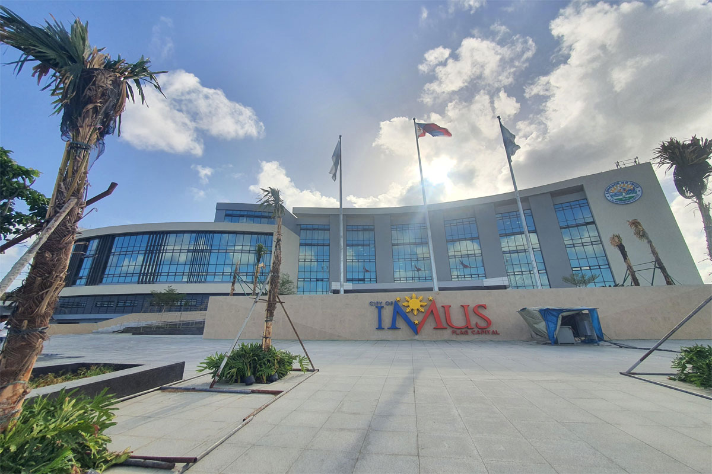
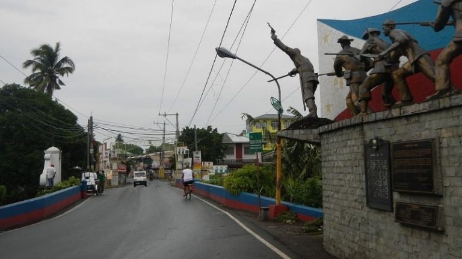
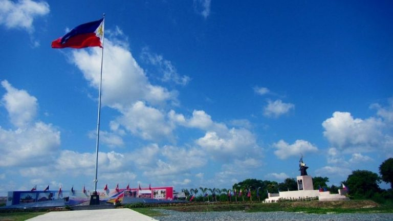
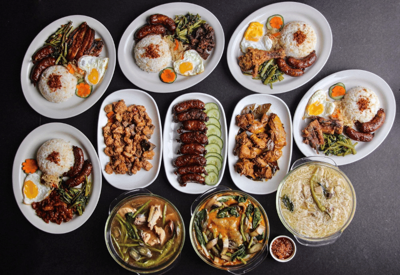
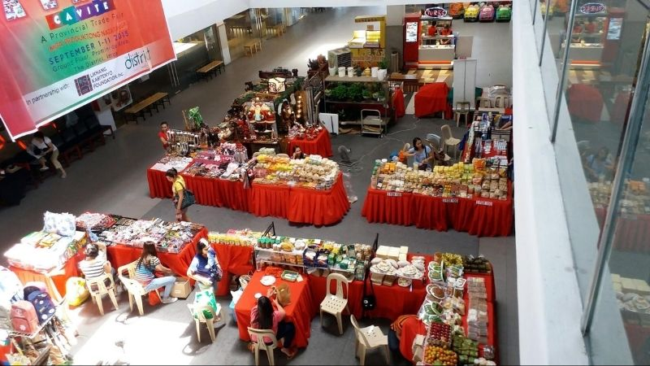

|
WELCOME TO IMUS CITY! |
| |
WELCOME TO IMUS CITY! |
HERE'S WHY IMUS, CAVITE SHOULD BE YOUR NEXT DAY TRIP DESTINATION
Mention the words “Cavite” and “day trip” in one sentence, and Tagaytay probably comes to mind. But this province down south offers so much more. In fact, one of the most historical places in Cavite is Imus, which is just a couple of hours’ drive away from Manila. And whether you’re a history nerd, a foodie, or a shopping junkie, Imus has something for you.
THINGS TO DO IN IMUS, CAVITE
1. LEARN HISTORY
Founded in 1975, Imus is the seat of not just one but two major Katipunero victories during the Spanish occupation.
PUENTE DE ISABEL II BRIDGE
The Battle of Imus happened on 3 September 1896 and was the first major battle of the Philippine revolution against the Spanish colonial government in Cavite — a turning point in our country’s history. This battle is memorialised on the Puente de Isabel II Bridge, a two-span stone arch bridge over the Imus River, where the battle was fought. Historical markers are scattered around the bridge, and the Battle of Imus monument can be found at the southern end of the bridge.
IMUS HERITAGE PARK
The Battle of Alapan, on the other hand, was fought on 28 May 1898. This was the first victory of the revolutionaries after Aguinaldo’s return from Hong Kong. The Philippine flag sewn by Marcella Agoncillo was unfurled and raised for the first time as part of the celebration — this is how Imus came to be known as the Flag Capital of the Philippines.
The battle is commemorated at the Imus Heritage Park in Alapan, where a marker with a 104-feet tall flagpole stands, proudly waving the Philippine flag. This replaced the original marker and flagpole located at Alapan 1 Elementary School. Also known as Dambana ng Pambansang Watawat (Shrine of the National Flag), it was declared as a national historical landmark by the National Historical Institute.
IMUS CATHEDRAL

Travel back in time and marvel at the old Hispanic architecture and Latin inscriptions at the Imus Cathedral. The church houses the image of Our Lady of the Pillar which was brought from Zaragoza, Spain around 1623.
2. EAT LOCAL
Hungry after your historical tour? Imus has no shortage of great food choices.
BIG BEN'S KITCHEN
Google ‘Imus cuisine’ and Imus longganisa will definitely be one of the top results. And the best place to feast on this local speciality is at Big Ben’s Kitchen in Medicion 1D. This small but cosy restaurant specializes in Imus’ version of the longganisa, otherwise known as adobo-style longganisa; it’s made with locally farmed pork, native spices, black pepper and garlic, salt, soy sauce, and vinegar. They also offer other Filipino dishes that’ll remind you of your grandmother’s cooking.
The Black Apartment

Fancy a more casual, young-ish dining experience? Check out The Black Apartment. With minimalist and Instagram-worthy interiors, The Black Apartment is a favourite among burger lovers. It is listed as one of the best burger places in Cavite, but that’s not the only food you can enjoy here. Fried chicken, fries, and milkshakes are also on the menu.
3. SHOP TILL YOU DROP!
MALLS IN IMUS CITY!
What better way to end your trip than with retail therapy? Cap off your Imus exploration by shopping at one (or two, we won’t judge!) of the malls scattered around the city. The three biggest malls in Imus are Robinsons Place Imus, The District, and SM Center Imus, but there are also smaller malls like City Mall and Lumina Point Mall. Most of these malls are conveniently located along Aguinaldo Highway, so you can easily choose a place to hang out and shop!
WANT TO LEARN MORE ABOUT IMUS, CAVITE?
PROCEED TO: